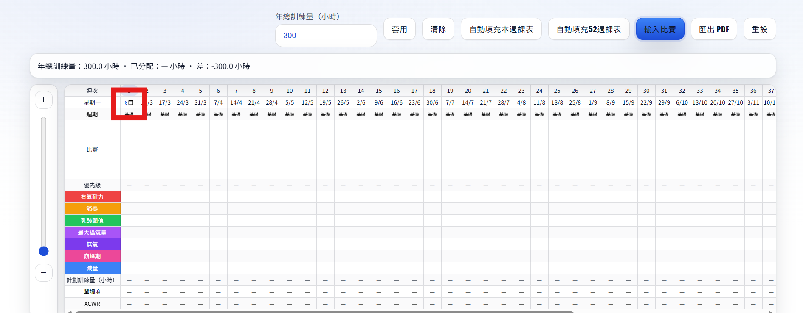
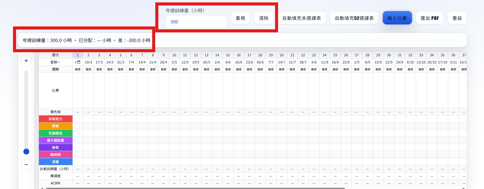
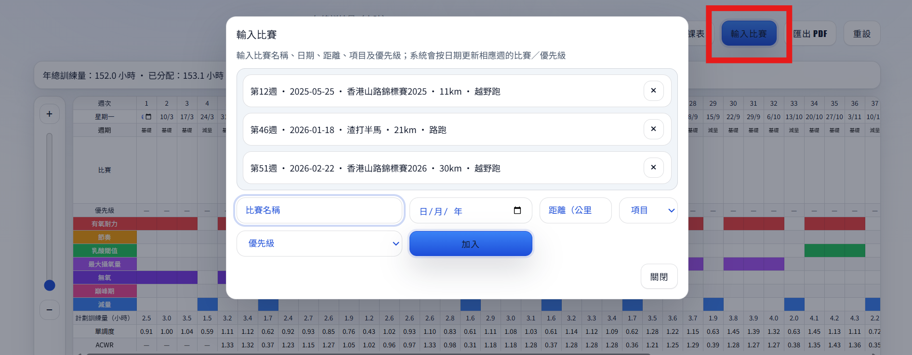
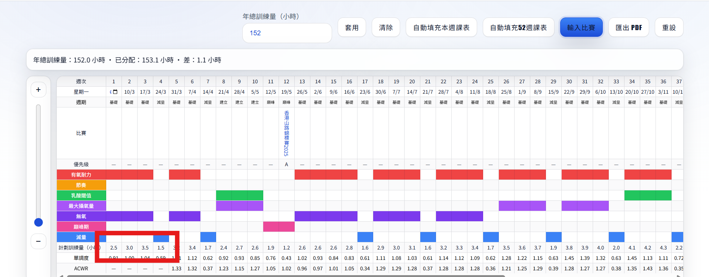
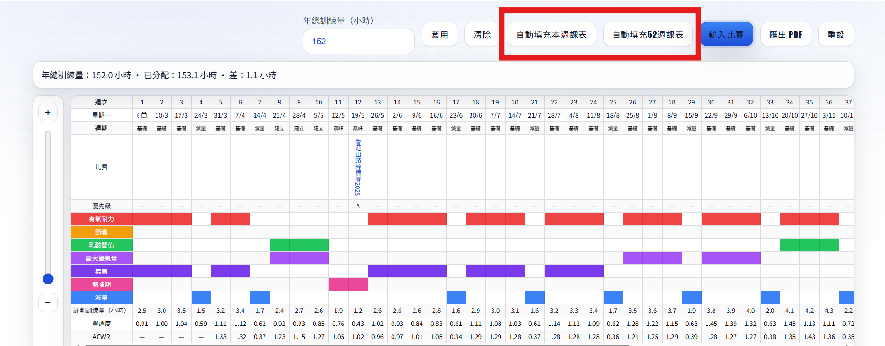
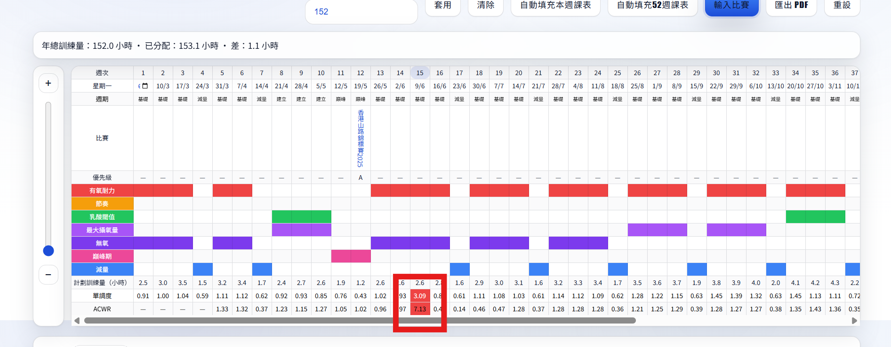
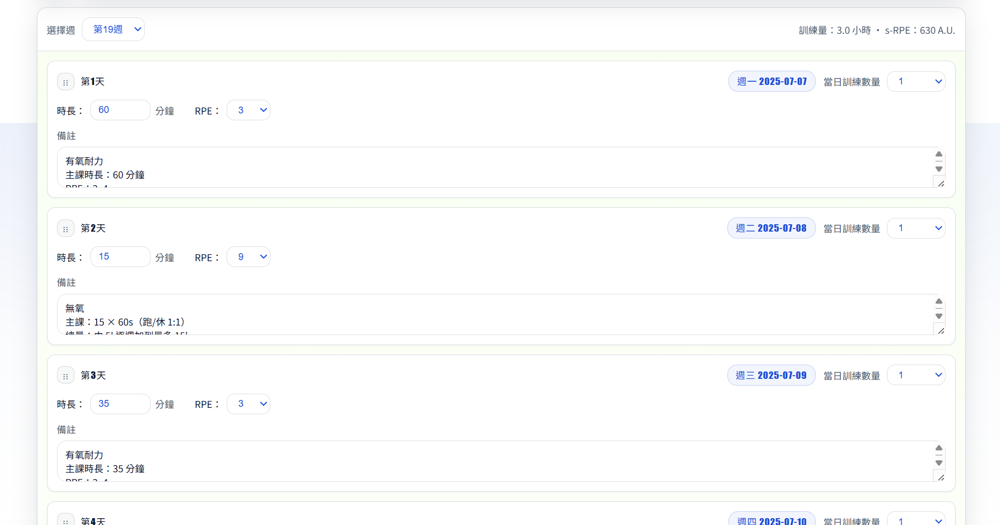

選擇週
如何使用「訓練監控」
下方每個步驟配合截圖作教學配圖，逐步講解「訓練監控」頁面功能。
1. 設定起始日期（第 1 週星期一）
在表格「星期一」列的第 1 格，選擇起始星期一；系統會自動更新後續 52 週日期。

截圖：起始日期設定
2. 設定年總訓練量（可選）
在頁面上方輸入「年總訓練量（小時）」並按「套用」，上方會顯示「已分配/差額」。

截圖：年總訓練量設定
3. 設定週期與比賽
用「週期」列設定基礎/建立/巔峰/減量/過渡；按「輸入比賽」加入比賽後，系統會自動更新相關週的週期/強度安排。

截圖：週期與比賽
4. 設定每週「計劃訓練量（小時）」
點擊表格「計劃訓練量（小時）」欄可開啟視窗：第 1–4 週可直接輸入；第 5–52 週預設用公式（過去四週平均 × 參數），參數會跟隨週期/比賽週而自動變動。

截圖：計劃訓練量視窗
5. 自動填充每日課表（Day 卡片）
設定完訓練量後，按「自動填充本週課表」會用當週訓練量/週期/比賽生成 7 天內容；按「自動填充 52 週課表」會覆蓋所有已有 Day 卡片內容。

截圖：自動填充課表
6. 查看風險指標：單調度 / ACWR
表格下方的「單調度」與「ACWR」會根據 Day 卡片內容計算；當 ACWR > 1.5 會以紅底提示，代表負荷增加較快。

截圖：單調度與 ACWR
7. 編輯 Day 卡片內容
在「每週詳情」區可以：調整當日訓練數量、分鐘/強度、備註，並可拖曳左側把手重新排序。你手動修改後，系統不會自動覆寫，除非再次按自動填充。

截圖：Day 卡片
8. 匯出 PDF
按「匯出 PDF」可輸出表格與圖表作打印/分享（建議先設定好比賽、訓練量與 Day 卡片）。

截圖：匯出 PDF
配速計算機
輸入測試成績後，系統會推算配速區間與推測完賽時間（VDOT 模型）
輸入測試成績
時間（時:分:秒）
配速區間
推測完賽時間